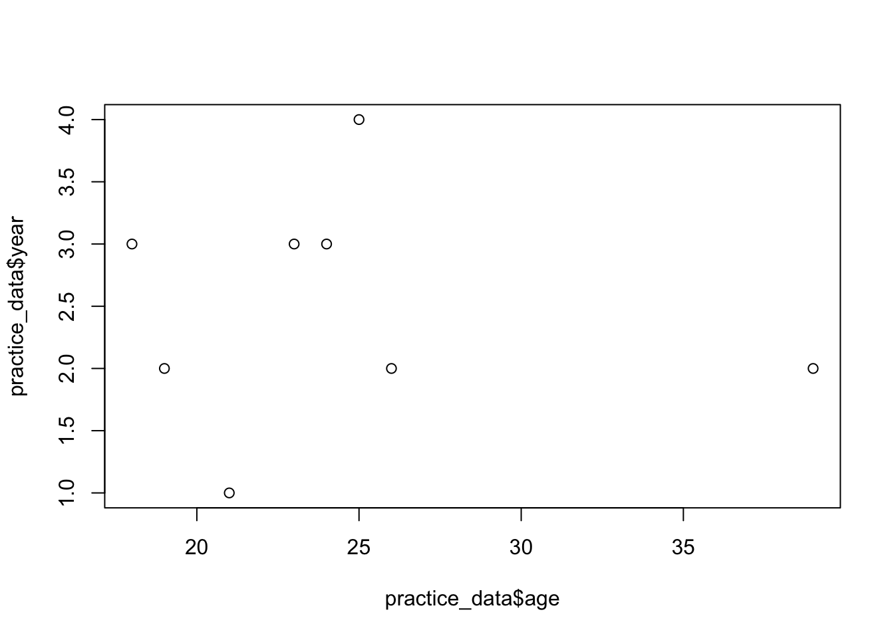

Code
1+1[1] 2Hello, World!It is possible that some of you have heard/seen the phrase, Hello, World!, before. That is usually the first thing you learn in programming, i.e., to learn to write a computer program to print this sentence to screen. In this lab, we will not print Hello, World! to the screen. Instead, we will learn how to use R (via RStudio) to perform statistical analyses and to write reports in order to communicate the insights learned from data. While the analysis involves writing computer code, it is in no way going to involve writing computer programs. The goal of today’s lab is to introduce you to R and RStudio. You will learn to access and use RStudio, as well as perform the basic functions regarding statistical analysis. To clarify which is which: R is the name of the programming language itself and RStudio is a convenient interface (Integrated Development Environment or IDE) for working with R. I like to think about R as the car engine and RStudio as a nice driver dashboard. The engine drives the car, but the dashboard makes it easier for the driver to control the car. Most R users work with RStudio.

We will work with the cloud (online) version of RStudio. To access RStudio online, click on the link https://posit.cloud to create an account or to sign in if you already have an account.
After signing in to R studio, our next step is to create a new project. You can think of a project as a folder or simply a collection of files. Our project will be called “MATH 246 Fall 2024”. Each lab that you complete will be saved in this project. To create the project, you start by clicking on “New Project” and then change the default name (UNTITLED PROJECT) to “MATH 246 Fall 2024”.
Yay! You now have your project ready. In the next section, we explain the meaning of the various panels on your screen.
Your new R studio project interface will look as follows:

Left Panel: The panel on the left is where the action happens. This panel is called the console. Every time you launch RStudio, it will have the same text at the top of the console telling you the version of R that you’re running. Below that information is the symbol ” > “. This is where you enter your commands. When you enter and execute a command, the output will come right below it. These commands and their syntax have evolved over decades (literally) and now provide what many users feel is a fairly natural way to access data, organize, describe, and invoke statistical computations. Try typing 1 + 1 in the console and hit enter.
1+1[1] 2Upper Right Panel: The panel in the upper right is called “environment”. It contains, among other things, the history of the actions or commands that you’ve previously entered.
Bottom Right Panel: The panel in the lower right contains tabs for browsing the files in your project folder, access help files for R functions, install and manage R packages, and inspecting visualizations through the viewer tab. By default, all data visualizations you make will appear directly below the code you used to create them. If you would rather your plots appear in the plots tab, you will need to change your global options.
R is an open-source programming language, meaning that users can contribute packages that make our lives easier, and we can use them for free. Packages are simply pre-written code meant to serve specific purposes and may contain other packages inside them. Packages may also contain data sets. Packages are stored in a directory called “Library”. For this lab, and many others in the future, we will use the following two packages:
The tidyverse package is a very popular “umbrella” package which houses a suite of many different R packages: for data wrangling (including tidying) and data visualization.
The openintro package for data and custom functions with the OpenIntro resources. You will notice that the readings frequently refer to data contained in the OpenIntro Package. This is the package.
The command to install a package in R takes the following format:
install.packages("package name")To install tidyverse and openintro, run the following commands:
install.packages("tidyverse")
install.packages("openintro")Note: You only need to install packages once, but you need to load them each time you relaunch RStudio. To call load (activate) the above installed packages, you use the following command:
library(tidyverse)
library(openintro)Why Tidyverse? We are choosing to use the tidyverse package collection because it consists of a set of packages necessary for different aspects of working with data, anything from loading data to wrangling data to visualizing data to analyzing data. Additionally, these packages share common philosophies and are designed to work together. You can find more about the packages in the tidyverse at tidyverse.org.
Suppose we want to find the mean of the numbers 23,24,26,19,18,25,21, and 39. The first thing you want to do is to get these data into R. We can achieve this by running the code below:
x <- c(23,24,26,19,18,25,21, 39)
# We use the symbol <- for assigning elements to an object. Here, we are creating a vector (a series of numbers) and storing it in an object called x. The symbols <- is used for assignment. In R, we use a # to designate a comment (text that should not be evaluated as code). In above chunk, the text after # is a comment. Comments are a good way to document your code.
To find the mean of those numbers, we simply run the command mean(x) as shown below.
mean(x)[1] 24.375The general format is do_this(on_this). Here, do_this is the function while x is the thing on which we want an action taken.
To find the median of the numbers, we run the command median(x) as shown below.
median(x)[1] 23.5We can also create a string object (i.e., a series of non-numerical elements or characters). We use quotes for string characters. See below:
y <- c( "Jane", "John", "Jess", "Jeff", "Joe", "Holli", "Henry", "Han")
# We use quotes for strings.Now, try to run the command mean(y):
What do you get? Programming languages generally produce error messages when you try to perform an inappropriate operation or if there is a mistake in the code. Error messages are a good way to learn what you did wrong. In this case, the mean/average of the object y does not make sense because the entries of y are not numerical.
You can, however, perform other operations on y. For example, you may want to know how many Jane entries are in y. To do this, you may simply tabulate the entries in y as shown below:
table(y)y
Han Henry Holli Jane Jeff Jess Joe John
1 1 1 1 1 1 1 1 We see that there is only one Jane entry in y. While you could easily count the number of Jane entries in y, the table function is useful when you have many entries and you want to know how many times each entry appears.
Before we proceed, delete (or comment out) the mean(y) that you had written earlier.
You can create a data frame by combining vectors of equal length. Before we do that, let us create two more vectors (a numeric one and a character one).
You can combine the vectors a, b, c, x, and y into a data frame as follows. We store this in an object called practice_data and then print it. Note that we use an underscore to separate the words practice and data in the name. Do not use a blank space for object or variable names.
practice_data <- data.frame(name=y, age=x, sex=b, year=a)
print (practice_data) name age sex year
1 Jane 23 F 3
2 John 24 M 3
3 Jess 26 F 2
4 Jeff 19 M 2
5 Joe 18 M 3
6 Holli 25 F 4
7 Henry 21 M 1
8 Han 39 M 2Notice that the data frame looks like a more natural way that you are likely to encounter data. Most of the time, data is collected and stored in excel and can be imported into R for use. Throughout the labs, we will learn how to import data from various sources into R.
We can run various statistics from data frames. Because the data frame combines many vectors (variables) we need to specify the data frame name and the variable we are targeting. For example, to find the mean of age, we write the data frame name and variable name separated by a dollar sign as follows mean(practice_data$age).
mean(practice_data$age)[1] 24.375You can also find other statistics. For median, the command is median(data$variable). For standard deviation, the command is sd(data$variable).
You can also run multiple summary statistics at once using the command summary(median(data$variable)). See below:
summary(practice_data$age) Min. 1st Qu. Median Mean 3rd Qu. Max.
18.00 20.50 23.50 24.38 25.25 39.00 The summary command give you the minimum value, first quartile, median, mean, third quartile and maximum value.
You can create basic plots in base R:
To create a scatter plot to visualize the relationship between age and year, you can use the code below:
plot(practice_data$age, practice_data$year)
To create a bar plot to visualize the distribution of M and F, you can use the command below:
Create an object (name it income) containing the following numerical elements: 750, 810, 680, 1200, 1500, 1399,1525.
Find the mean of the values in #1 above.
Create another object with names of your choosing and then combine it with the first object to make a data frame called my_data.
Run the summary statistics for the income variable using my_data data frame that you created in #3 above.
R comes with many pre-loaded data frames. One such data frame is called mtcars. Run the command ?mtcars to learn more about this data frame. Next, load this data frame into your work space by running the command data(mtcars).
Use the mtcars data frame to find the median horsepower of the cars.
Create a histogram to visualize the distribution of the variable hp. What can you say about the distribution of hp based on the histogram?